Sandipan
Chakraborty
Game & System Designer
I design slot games from first concept to release, with 25+ titles shipped for land-based and online markets through Pilot Games, Relax Gaming and Four Leaf Gaming. Beyond client work, I design fun games of my own and build them as playable prototypes: slots, action games, a platformer and a board game.
Shipped for Pilot Games
Four full-design land-based slots for the North Dakota market, from theme and feature ideation to documentation, QA and delivery. Each page has the gameplay recording.
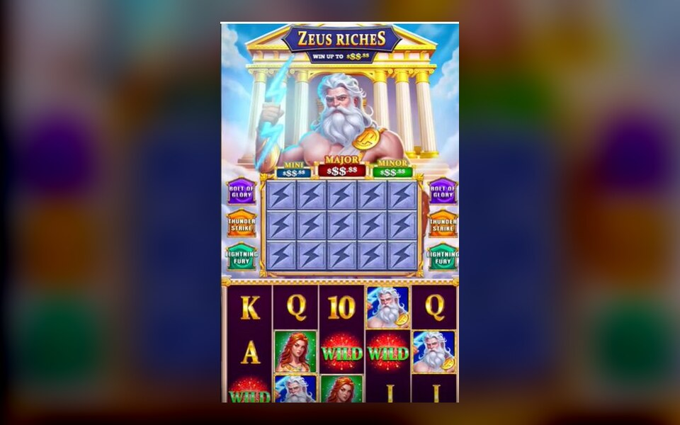
ShippedZeus Riches
Greek-mythology cabinet slot built on a True Persistence meter that never caps or resets.
Role: principal designer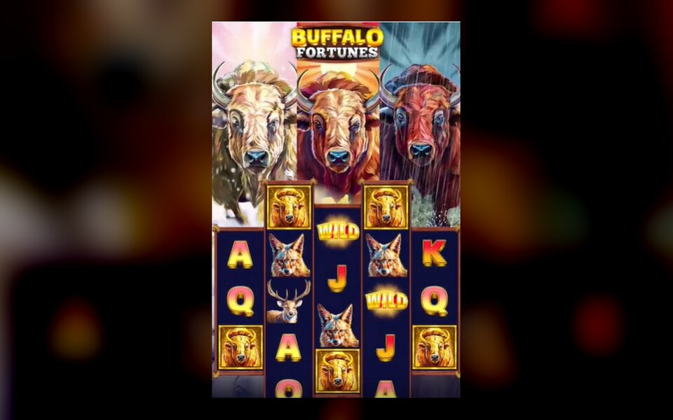
ShippedBuffalo Fortune
American-wildlife cabinet slot with Uneven Reels and a Hold & Respin bonus.
Role: principal designer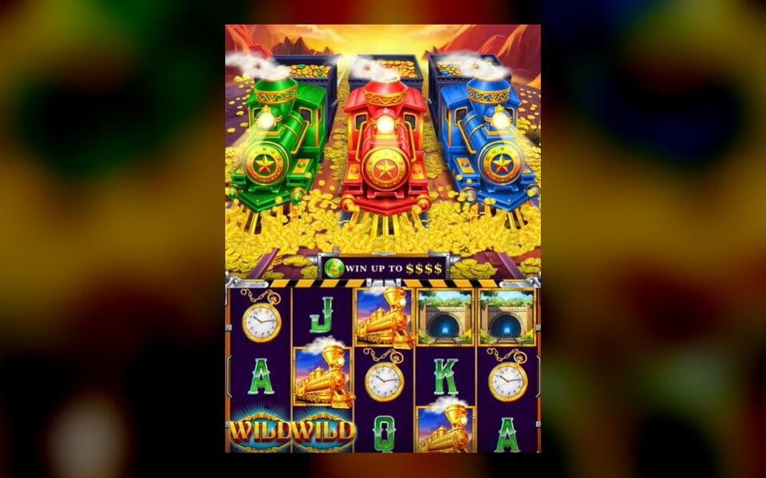
ShippedXpress Riches
Gold-rush locomotive slot with Perceived Persistence and combined Hold & Respin and Quick Hit bonuses.
Role: principal designer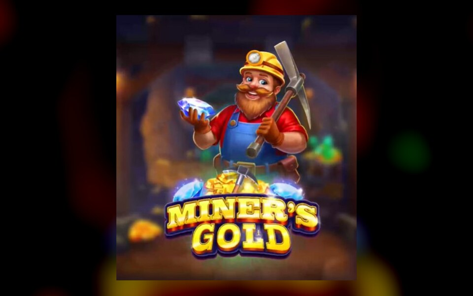
ShippedMiner's Gold
Prospector slot pairing a True Persistence collector with a Quick Cash bonus on top of Hold & Respin.
Role: principal designerAlso shipped · reskins
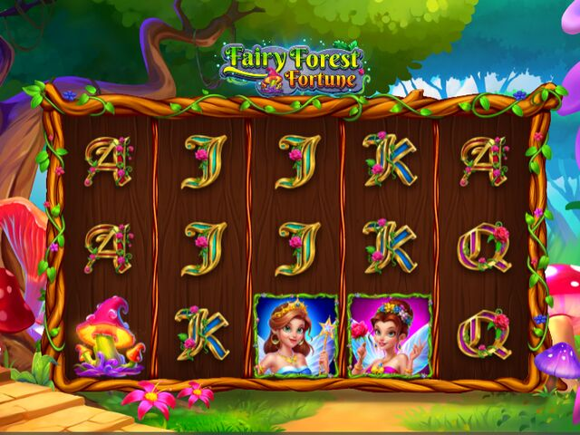
Fairy Forest Fortune
Fairycore reskin with Wild Respin and a Free Spin Bonus.
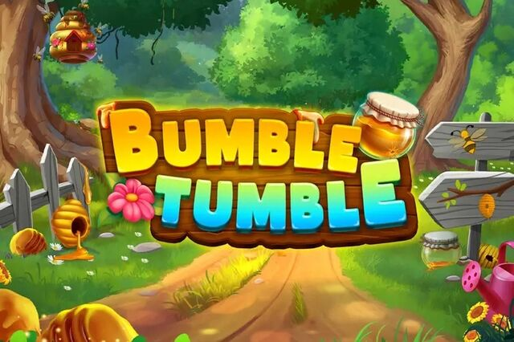
Bumble Tumble
Honey-farm reskin built on cascading wins and a Free Spin bonus.
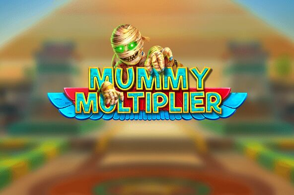
Mummy Multiplier
Egyptian horror-comedy reskin on the cascading engine with multiplier Free Spins.
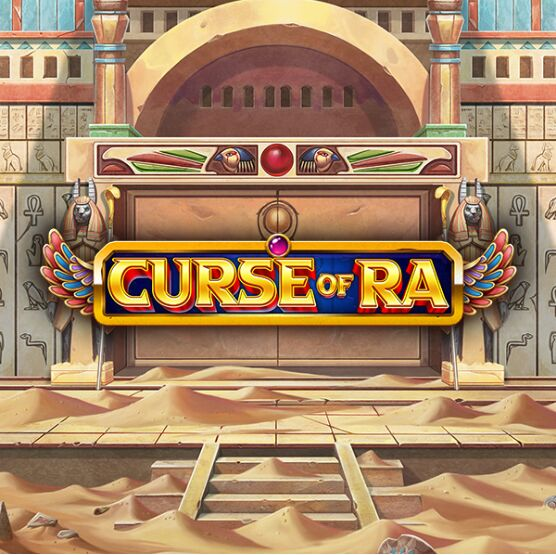
Curse of Ra
Egyptian temple reskin built on a Persistence Collector toward guaranteed Free Spins.
On reskin projects
I guided symbols, visuals, animation flow and sound design, and stayed involved from idea through documentation to final delivery, protecting the core vision while preserving the original concept and mechanics.
On full-phase projects
I was principal designer: theme and feature ideation, documentation, quality checking and final delivery.
Seven playable concepts
Original designs I built to play in the browser. Open any page to watch a clip, play the build, and read the process behind it.
Slot games
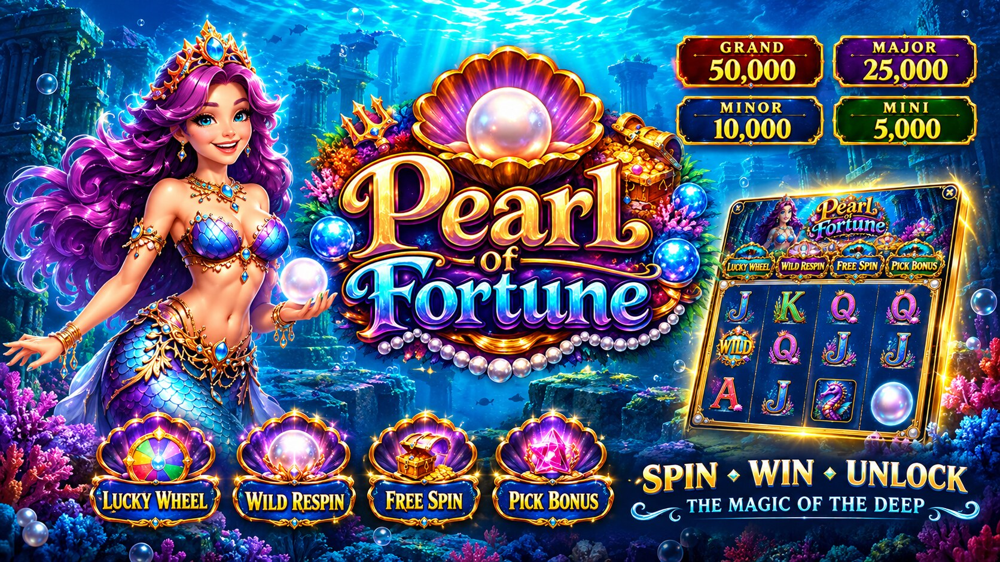
PlayablePearl of Fortune
Five reel collectors, five features, four jackpots. Portrait slot with a working prototype.
Role: design → playable prototype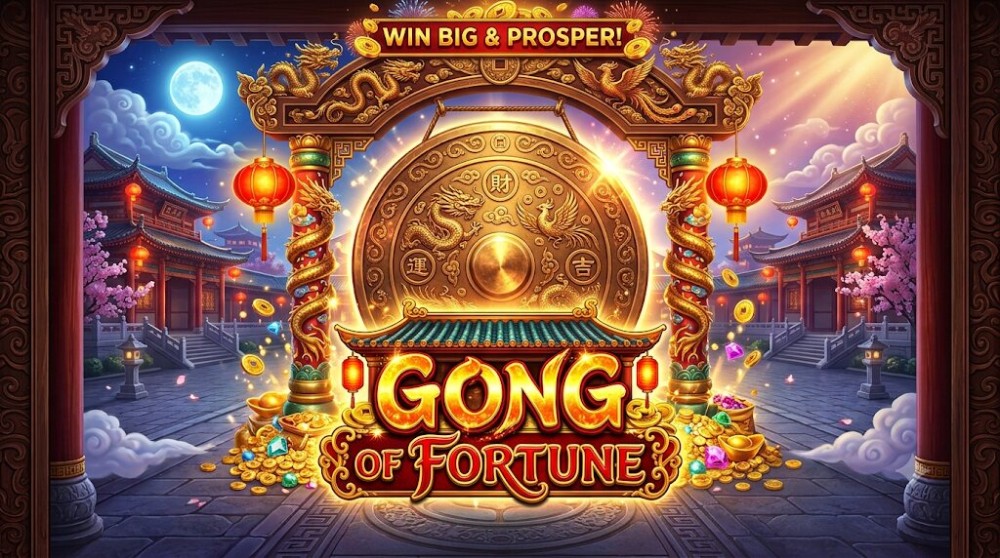
PlayableGong of Fortune
A 3×3 where a persistent Gong meter stores free spins and a Quick Hit ladder pays up to 100×.
Role: design → playable prototype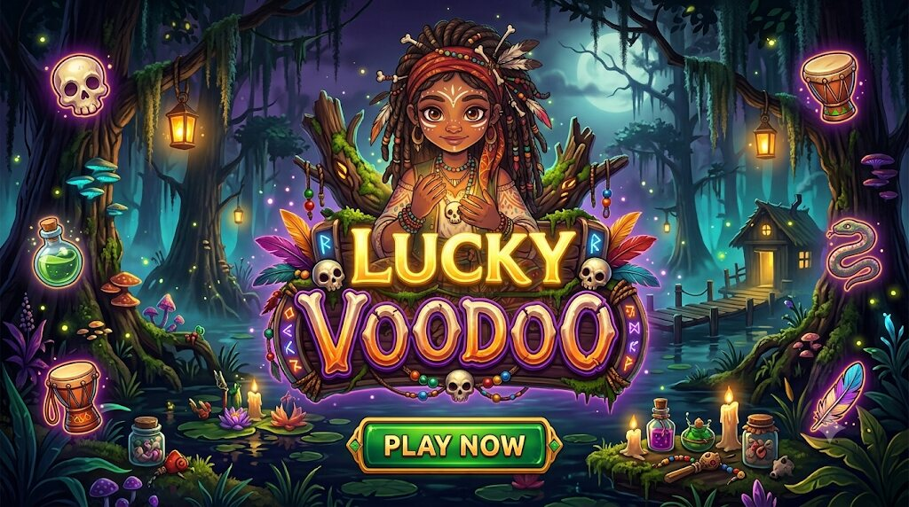
PlayableLucky Voodoo
Collect dolls to wake their magic: Cash on Reel, Hold & Respin and four jackpots.
Role: design → playable prototypeMobile & PC games
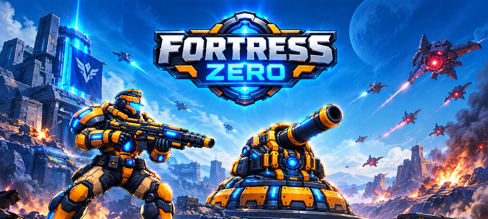
PlayableFortress Zero
A roguelite shooter where the thing you defend can't move. Six-way decision loop, Godot 4 build, playable on desktop and phone.
Role: design → GDD → playable build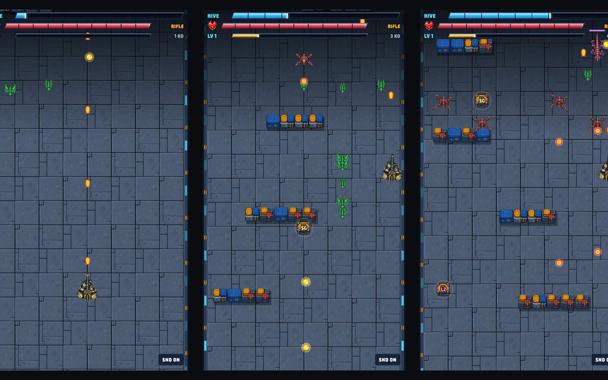
PlayableHive Breach
One-thumb corridor shooter: steer, pick a mod every level-up, destroy the Hive Warden.
Role: design → playable prototype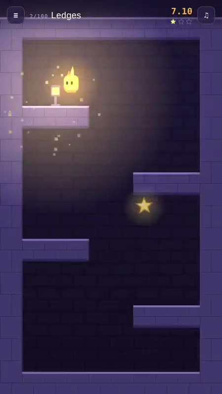
PlayableLantern Climb
A one-thumb tower climber: Wick runs, you pick the moment. 100 towers of 15–30 seconds.
Role: design → playable prototype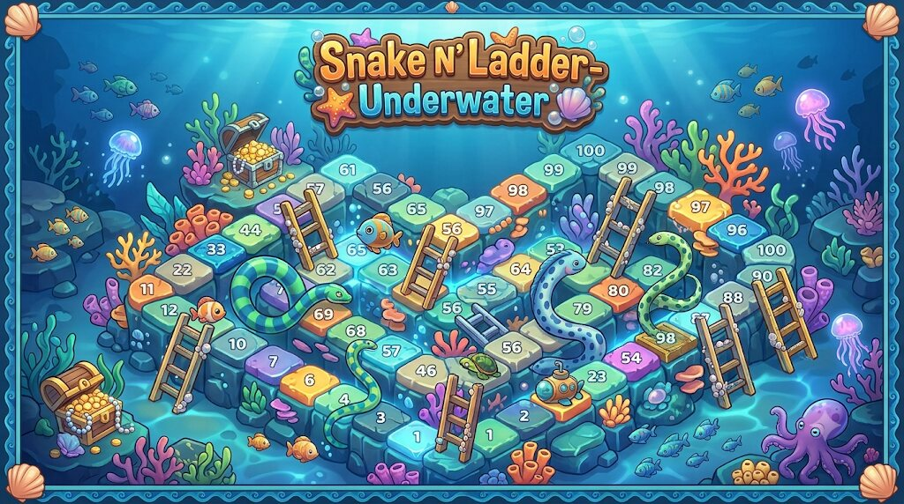
PlayableSnake and Ladders: Underwater
The classic on an isometric step-mountain under the sea, with power-ups, hazards and a daily challenge.
Role: design → playable prototype